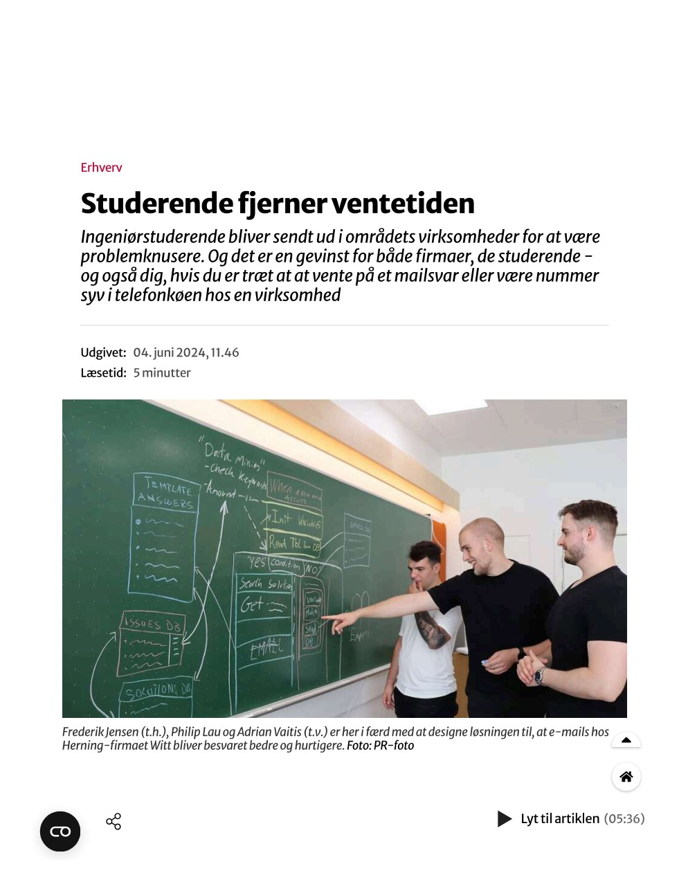

Bachelor of Engineering, Business Development

Philip Lau (Lau)
I am a passionate individual who puts full energy into bridging the gap between technical development and strategic management. I focus on implementing intelligent automation framework architectures and translating complex tech logic into clear business value.
"My engineering philosophy centers on creating functional digital artifacts that deliver measurable business value through the strategic application of technology and data."
02Featured Media

TBMI - Witt A/S
Technological Business Model Innovation (TBMI): A formal business proposal evaluating advanced automation ecosystems and intelligent process enhancements. Engineered within the Customer Service Department environment utilizing targeted Power Automate flows and AI Builder structures.
03Coding Languages & Tools
Learning Right Now
On My Bucket List
Certifications & Badges
04Professional Skills
Technical Capabilities
- Generative AI Ecosystems – Building and tuning search pipelines using RAG, GraphRAG, and vector similarity architectures.
- Application Automation – Building custom business dashboards, workflow rules, and low-code integrations using the Power Platform ecosystem.
- Cybersecurity Basics – Analyzing application architectural vulnerabilities using structured threat modeling.
- Data Analytics & Web Tech – Writing clean server-side code, styling user environments, and relational database scripting.
Leadership & Strategy
- Bridging Tech and Business – Translating complex engineering limitations into functional, value-driven strategy roadmaps.
- Team Leadership & Management – Directing project workloads, handling operational shift handoffs, and resolving interpersonal issues smoothly.
- Stakeholder Communication – Presenting architectural progress reports and aligning technical requirements with multiple stakeholders.
- Academic Instruction – Explaining complex computer concepts step-by-step and running clear developer learning workshops.
05Experience
Research Assistant
- Development of a Modular RAG course bot, that can answer on course material in the different programs both on bachelor and master's programs.
- Design and facilitation of a professional AI workshop utilizing the 33A AI Cards® methodology to teach Master’s students how to architect structured AI business cases and identify high-value automation opportunities
- In collaboration with the company eiva, developed a internal hybrid RAG Customer Service Agent that uses BM25, Similarity Search and a GraphRAG. With a knowledge base of large technical documentation and support tickets in freshdesk
- Architected an open-source, transparent C#/.NET agentic literature review environment for the OSSYM 2026 conference @ CODE university Berlin.
Student Worker - Digitalization
- Served as a citizen developer delivering 15+ Power Apps solutions and over 50 Power Automate Cloud flows.
- Application Lifecycle Management development and Integration for Power Platform (The 10th largest environment with The LEGO Group)
- Matured a proof-of-concept Retrieval-Augmented Generation (RAG) chatbot that searches across all core documentation and SharePoint articles for Element development, Mould Development, and Mould Construction-covering 331 engineers.
- Designed and scaled custom automated engineering newsletter systems delivering localized content metrics.
- Facilitator of TDC, Specialist community (30-40 people)
- Documentation of quality for rework (ISO 9001) for moulds for 10 months through Excel
- Technical Product Owner of 50+ SharePoint Sites for Mould Engineering for 10 months
- Machine learning initiative for Mould Designers with image processing
- Managed a successful split of a large process related to form processing from 1 department to 2 departments
- Developed and deployed digitalization-transition strategy for moving 50 cloud flows and 30 Power Apps
Student Instructor - Web Technologies
- Instructed undergraduate students in the course web technologies covering the languages: HTML, CSS, JavaScript, PHP, and MySQL.
- Recieved a student evaluation of 4.9 average from 1-5 on my ability to teach the material.
06Education
MSc in Engineering Technology-Based Business Development (TBBD)
- Grade: 12 (A+)
- Design of Digital Enterprise (DDE) -- with a specialization in automation, AI and digitalization
[+] VIEW MASTER'S COURSES
- • Digital Back-End Solutions
- • Digital Front-End Solutions
- • Design of Digital Enterprise (DDE)
- • Python Fundamentals for Machine Learning
- • Technological Business Model Innovation
- • Technology Focus Project
- • Technology Specialisation 1 & 2
- • Business Development Project
- • Management of Technology
- • Master Thesis Project
Bachelor of Engineering Business Development (BDE)
- Grade: 12 (A+)
- Focus on business cases with digitalization
[+] VIEW BACHELOR'S COURSES
- • Applied Mathematics
- • Advanced Web Development
- • Engineering Internship
- • Individual Technology Focus
- • Industry 3.0 - Industrial Plant Automation
- • Industry 4.0 - Internet of Things
- • Innovation Management
- • Introduction to 3D Print Additive Manufacturing
- • Market Analysis & Methodology
- • Marketing and Finance
- • Negotiation Tactics
- • Personal and Social Competences
- • Physics
- • Project Management
- • Quality Management
- • Strategic and Economic Analysis
- • Supply Chain Management
- • Technological Product Development
- • Technology-based Concept Development
- • Web Technologies
- • Bachelor's Project
07Volunteering Work
Board Member for Education Committee (TBBD)
- Engaged in academic development initiatives to help shape course frameworks and curriculum strategies.
Chair for IDA Event Herning
- Organized professional tech events and networking opportunities for engineering students in the local area.
Volunteer
- Assisted with organizing student community events and supporting regional professional society activities.
Team Lead for Tutorweek BDE 2021
- Managed a team of tutors to plan, coordinate, and run intro week onboarding events for new incoming students.